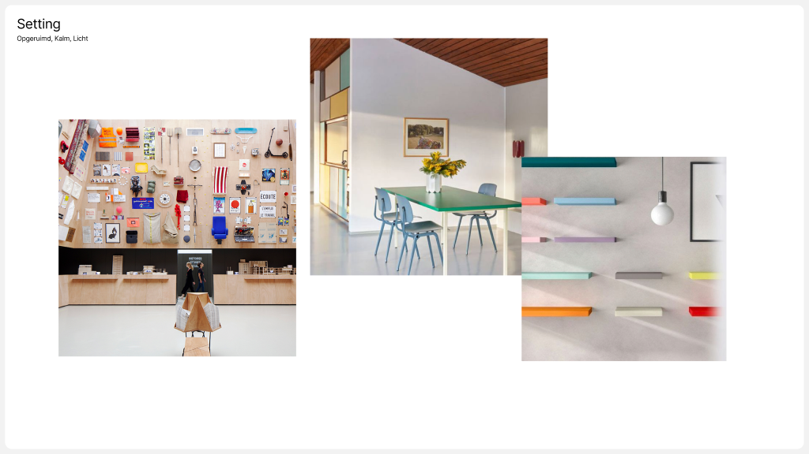
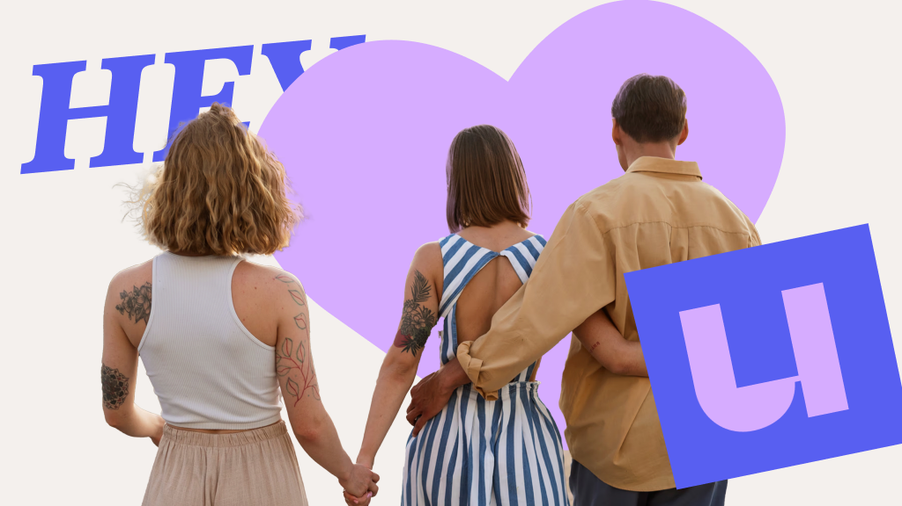

Wetenschap voor iedereen
Al meer dan tien jaar zijn we de vaste visuele partner van de Universiteit van Nederland en Vlaanderen.
We helpen het grootste wetenschapsplatform van Nederland met alles waar inhoud en beeld samenkomen. Van dagelijkse animaties en nieuwe formats tot de huisstijl, werkwijzes en software waarmee de redactie zelf verder kan.


De uitdaging
Iedere week vertelt Universiteit van Nederland nieuwe wetenschappelijke verhalen. Over totaal verschillende onderwerpen, voor een groot publiek en in steeds nieuwe vormen.
Dat vraagt om meer dan goede vormgeving.
Een ingewikkeld onderzoek moet begrijpelijk worden zonder de nuance kwijt te raken. Een nieuw format moet een eigen gezicht krijgen én onderdeel blijven van hetzelfde merk. En met honderden uitingen per jaar moet de visuele identiteit herkenbaar blijven zonder alles in dezelfde mal te stoppen.
De uitdaging zit daarom niet in één productie, maar in het geheel: hoe bouw je aan een visueel merk dat iedere dag nieuwe inhoud kan blijven dragen?


Ons inzicht
Goede wetenschapscommunicatie begint voor ons niet bij animeren, maar bij begrijpen.
Daarom werken we direct met de redactie. We duiken in de inhoud en bepalen wat iemand moet begrijpen en waar beeld daadwerkelijk iets toevoegt.
Soms is dat één grafiek of visuele metafoor. Soms vraagt een verhaal om een nieuw format. En soms zit het probleem niet in de video zelf, maar in de manier waarop honderden video's worden gemaakt.
Juist doordat we op al die niveaus betrokken zijn, kunnen we verder kijken dan de uiting die op dat moment voor ons ligt.
Niet alleen oplossen wat er vandaag gemaakt moet worden, maar ook kijken hoe het morgen beter kan.

Onze keuze
Daarom behandelen we onze rol bij Universiteit van Nederland als één doorlopende samenwerking.
Samen met de redactie en Ronny van Allthis ontwikkelden we de visuele identiteit. Die bewaken, gebruiken én vernieuwen we continu terwijl het merk verder groeit.
We denken mee wanneer nieuwe formats nog op papier staan, sluiten aan bij de redactie wanneer verhalen worden ontwikkeld en maken de uiteindelijke vormgeving en animatie.
En als we merken dat een handeling iedere week terugkomt, kijken we of de werkwijze slimmer kan. Dan kan de oplossing net zo goed een template, nieuwe workflow of stuk software zijn als een animatie.


Wat we maken
Dat loopt inmiddels behoorlijk uiteen: formats, explaineranimaties, grafische vormgeving, huisstijlontwikkeling, live events, boekcovers, websites, templates, workflows en software.
Voor HEY U! dachten we bijvoorbeeld vanaf het begin mee over het format en vertaalden we dat door naar set, art direction, camerahoeken, kleur, graphics en animatie.
Voor terugkerende social content bouwden we een titelbalktool waarmee de redactie één keer een titel invoert en automatisch alle benodigde formaten krijgt, altijd binnen de huisstijl.
En ondertussen maken we iedere week gewoon de beelden die nodig zijn om ingewikkelde wetenschap helder uit te leggen.
Het effect
Na meer dan tien jaar kennen we niet alleen de huisstijl, maar ook de inhoud, de redactie en de manier waarop er gewerkt wordt.
Daardoor kunnen we op verschillende niveaus tegelijk waarde toevoegen: een verhaal beter uitleggen, een nieuw format helpen bedenken, de identiteit bewaken of een terugkerend productieprobleem structureel oplossen.
En terwijl er jaarlijks honderden nieuwe uitingen bijkomen, blijft Universiteit van Nederland herkenbaar én in ontwikkeling.
Van één ingewikkelde animatie tot de manier waarop een redactie visueel werkt: we helpen bepalen wat er nodig is.